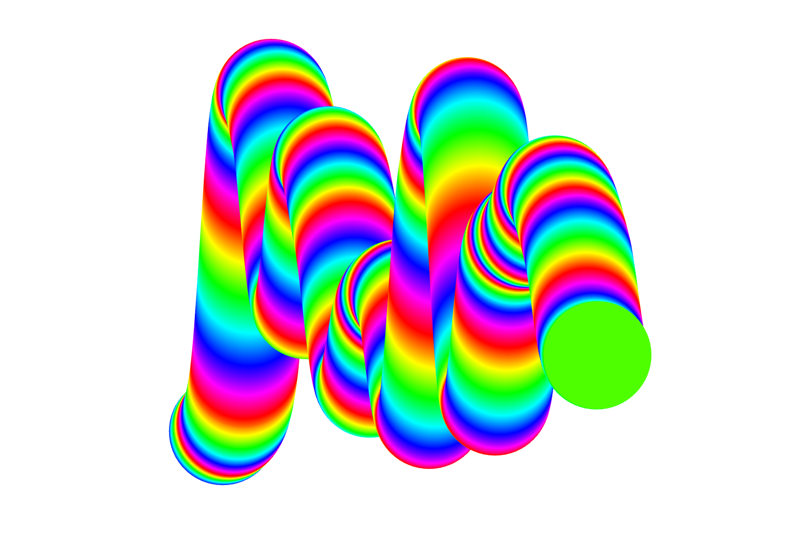
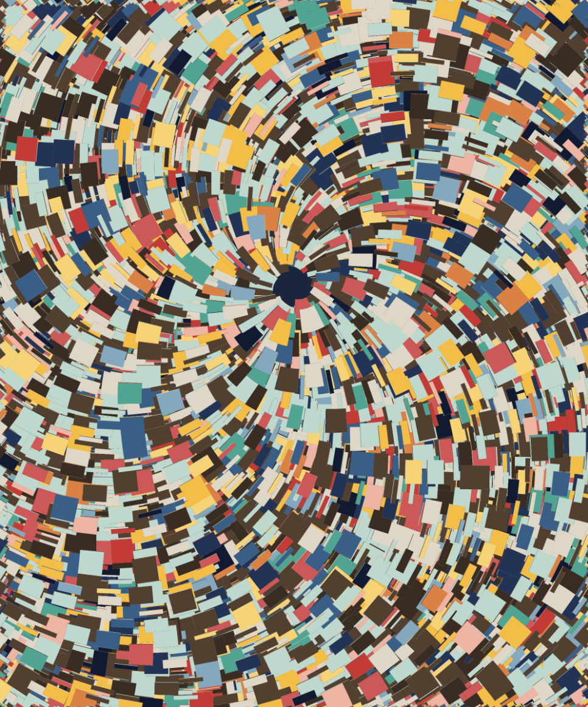

Définition
Le Generative Crypto Art est un courant artistique qui utilise des algorithmes pour produire des œuvres numériques. L’artiste ne dessine pas une image finale : il ou elle conçoit un système (règles, paramètres, probabilités). L’œuvre est ensuite générée automatiquement, souvent au moment où un NFT est créé sur la blockchain.
Cette approche met l’accent sur le processus : une même règle peut donner des résultats différents, selon les variables et la part de hasard intégrée au programme.
Origines
Le Generative Crypto Art s’inscrit dans la continuité de l’art génératif, développé dès les années 1960 avec l’usage de systèmes et d’ordinateurs pour produire des formes. La blockchain change surtout les conditions de circulation : elle permet d’enregistrer l’existence d’une œuvre, son historique (provenance) et son propriétaire.
Blockchain
Dans ce contexte, la blockchain ne sert pas seulement à “vendre” une image. Elle intervient dans la manière dont l’œuvre est produite et reconnue. Dans certains projets, le code est stocké on-chain (directement sur la blockchain), ce qui rend possible la régénération de l’œuvre sans serveur externe.
L’œuvre existe pleinement au moment de sa génération : le programme, les variables et le support technique font partie du dispositif.
Art Blocks
Art Blocks est une plateforme associée à la diffusion de l’art génératif sur blockchain. Les artistes y publient des algorithmes et les collectionneurs déclenchent la génération au moment de l’achat. Le fonctionnement met l’accent sur le processus plutôt que sur une image prédéfinie.
Artistes et œuvres

Snowfro — Chromie Squiggle
Snowfro est un artiste et développeur à l’origine de la plateforme Art Blocks. Son œuvre Chromie Squiggle repose sur un programme qui génère des lignes colorées continues selon des paramètres (palette, épaisseur, type de mouvement).
Chaque Squiggle est généré au moment de la création du NFT. Les œuvres partagent une structure reconnaissable, mais les variations dépendent des variables utilisées lors de la génération.

Tyler Hobbs — Fidenza
Tyler Hobbs utilise des algorithmes pour produire des compositions abstraites générées par le code. Dans Fidenza, il définit des contraintes visuelles (distribution des formes, directions des lignes, gammes de couleurs) et intègre une part de hasard dans la génération.
Chaque œuvre est produite à partir du même algorithme, mais aboutit à une composition différente en fonction des variables. Le projet montre comment un système unique peut produire une diversité de résultats visuels.
Enjeux et limites
Le Generative Crypto Art pose plusieurs questions. Les algorithmes reflètent des choix de conception (règles, contraintes, paramètres) et ne sont donc pas neutres. Par ailleurs, l’accès à ces pratiques peut demander des compétences techniques, ce qui influence qui peut produire ou comprendre ces œuvres.
Conclusion
Le Generative Crypto Art peut être décrit comme une pratique contemporaine basée sur le code et la blockchain, où le système de génération est central. Il se relie à l’histoire de l’art génératif tout en utilisant les outils et les conditions techniques actuelles.